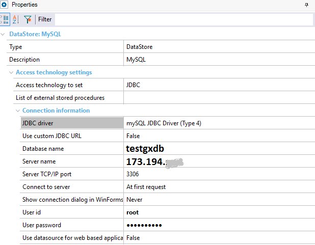

How to deploy an application to Google App Engine (GeneXus 17 upgrade 6)
Using the Application Deployment tool, it is possible to run Java applications on Google App Engine.
Prerequisites
First, you should have set the Google environment using the Google management console.
Don't go on reading this document without having a look at Deployment of an app to Google App Engine: setting up the environment.
Steps to deploy to Google App Engine
Data Store configuration
Before making a deployment, you must configure your Data store to connect to MYSQL.
If the application is running in development mode (i.e., locally), use the com.mysql.jdbc.Driver (the default driver) to connect to the Mysql in Google app Engine. Then, choose JDBC Driver = Mysql JDBC Driver (Type 4):

But if the web application is in production mode (i.e., the application is going to be deployed), use com.mysql.jdbc.GoogleDriver to connect to your Cloud SQL instance. Then, in GeneXus, configure:
- Custom JDBC Driver= com.mysql.jdbc.GoogleDriver
- Custom JDBC URL = jdbc:google:mysql://<application>:<instance>/<database>

Build
Just to generate the client.cfg, do a build with this only.
Deploy
Go to the Build menu and select the Deploy Application option.
- Select the Main objects to be included in the deployment.
- In Target, select the option "Google App Engine".
- In the Deployment screen fill in the following:
- Application Id
Enter the application ID as obtained using the Google management console
- Application version
- SDK Directory
Local path where the Google App Engine SDK for Java is installed.
After selecting the main objects and configuring the necessary properties for the automatic deployment, press the Deploy button.
It will build the WAR package, as well as upload and deploy it on Google App Engine.
You'll see an output similar to the following:
Build started 28/8/2016 21:08:12. Project "C:\gx15\DeploymentTargets\GoogleAppEngine\deploy.msbuild" on node 1 (Deploy target(s)). Deploy: "C:\soft\appengine-java-sdk-1.9.38\bin\appcfg.cmd" -A iconic-lane-12xxxx update "C:\Models\SummerReading2\SummerReading2\Deploy\CloudGoogle\GAE\20160828210752" -V 8 ******************************************************** Beginning interaction for module default... 0% Created staging directory at: 'C:\Users\sjuarez\AppData\Local\Temp\appcfg615722412360995813.tmp' 5% Scanning for jsp files. ...................... 98% Uploading index definitions. Update for module default completed successfully. Success. Cleaning up temporary files for module default... Done Building Project "C:\gx15\DeploymentTargets\GoogleAppEngine\deploy.msbuild" (Deploy target(s)).
After you deploy, your application runs at the URL https://<YOUR_PROJECT_ID>.appspot.com.
For example, the URL could be https://y-dot-iconic-lane-12xxxx.appspot.com/servlet/com.summerreading2.viewauthor?1,
Note: Copy the project Id from the Dashboard information. Note that the first number ("1" in the following picture) is the version number.
Important Notes for the first time you deploy
GeneXus uses the appcfg tool to deploy the application. If this is your first time using the tool (the first time deploying to Google App Engine from this machine), you'll be asked to authorize appcfg through a browser.
See Deploy to Google Engine for the first time from a local machine
By default, the token will be stored in the .appcfg_oauth2_tokens_java file in your home directory so you won't be asked again. You'll need to delete that file if you want to use another account; this will result in the authorization prompt again when you deploy.